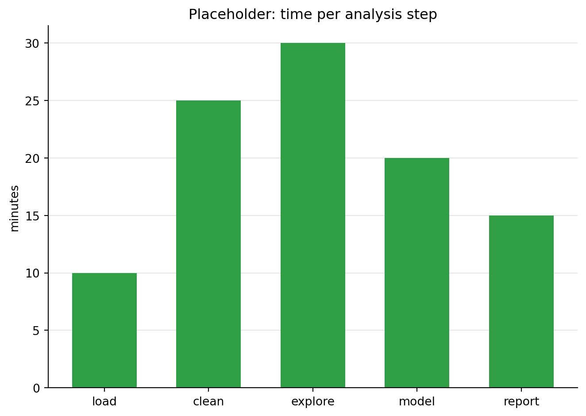
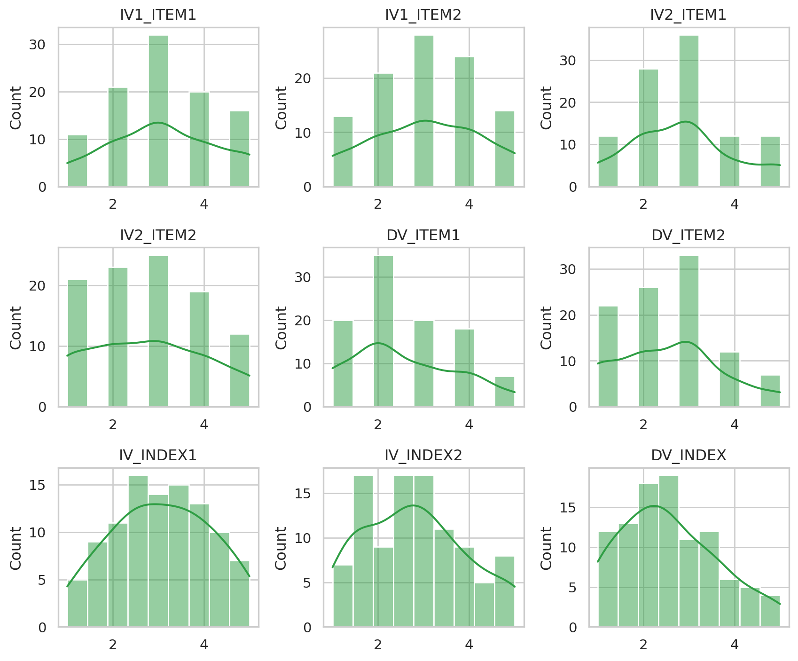
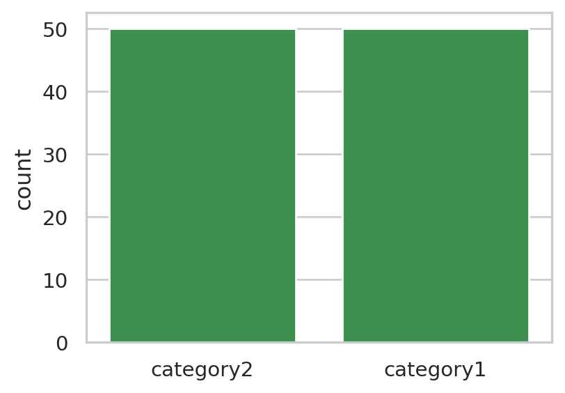
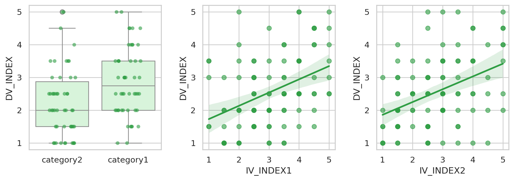

Session 1 · de-code data analysis
Democratizing Coding with AI — Mon 5 Oct
Topics
1 Loading data
1.1 Load from GitHub
The sample dataset is a small simulated survey: 100 respondents, one group variable and six questionnaire items on a 1–5 scale, combined into three indices. The file lives in the course repository on GitHub. Its raw URL returns the plain file, so pandas can read it directly from the web — nothing to download first.
The file is tab-separated (.tsv), so we tell read_csv that the separator is a tab (\t).
import pandas as pd
url = "https://raw.githubusercontent.com/nils-holmberg/de-code/main/csv/komp014-simulated-data-n100.tsv"
df = pd.read_csv(url, sep="\t")
print(df.shape) # (rows, columns)
df.head()(100, 10)| IV_CAT_GROUP | IV1_ITEM1 | IV1_ITEM2 | IV2_ITEM1 | IV2_ITEM2 | DV_ITEM1 | DV_ITEM2 | IV_INDEX1 | IV_INDEX2 | DV_INDEX | |
|---|---|---|---|---|---|---|---|---|---|---|
| 0 | category2 | 4 | 3 | 1 | 1 | 1 | 1 | 3.5 | 1.0 | 1.0 |
| 1 | category1 | 4 | 5 | 3 | 3 | 2 | 3 | 4.5 | 3.0 | 2.5 |
| 2 | category2 | 1 | 2 | 1 | 1 | 1 | 1 | 1.5 | 1.0 | 1.0 |
| 3 | category2 | 3 | 2 | 5 | 5 | 2 | 2 | 2.5 | 5.0 | 2.0 |
| 4 | category1 | 2 | 2 | 1 | 2 | 1 | 1 | 2.0 | 1.5 | 1.0 |
1.2 Alternative: upload the file to Colab
If you have the file on your own computer, you can upload it to the Colab session instead. This cell is not run on the course website; in Colab, run it and pick the file in the dialog. Uploaded files end up in /content/, the working folder of the Colab session.
from google.colab import files
files.upload() # choose komp014-simulated-data-n100.tsv
df = pd.read_csv("/content/komp014-simulated-data-n100.tsv", sep="\t")
df.head()1.3 Colab: install pyreadstat
SPSS files (.sav) need the pyreadstat package, which Colab does not include. Run this cell once per Colab session before the next step.
%pip install pyreadstat1.4 Same data, four formats
The same table can be stored in different file formats. Here we save df as CSV, TSV, Excel and SPSS, and attach a short label to each variable in the SPSS file.
from pathlib import Path
import pyreadstat
labels = {
"IV_CAT_GROUP": "Group (category1 / category2)",
"IV1_ITEM1": "IV1 item 1 (1-5)",
"IV1_ITEM2": "IV1 item 2 (1-5)",
"IV2_ITEM1": "IV2 item 1 (1-5)",
"IV2_ITEM2": "IV2 item 2 (1-5)",
"DV_ITEM1": "DV item 1 (1-5)",
"DV_ITEM2": "DV item 2 (1-5)",
"IV_INDEX1": "IV1 index, mean of IV1 items",
"IV_INDEX2": "IV2 index, mean of IV2 items",
"DV_INDEX": "DV index, mean of DV items",
}
out = Path("data")
out.mkdir(exist_ok=True)
df.to_csv(out / "komp014.csv", index=False)
df.to_csv(out / "komp014.tsv", sep="\t", index=False)
df.to_excel(out / "komp014.xlsx", index=False)
pyreadstat.write_sav(df, out / "komp014.sav",
column_labels=[labels[c] for c in df.columns])
sorted(p.name for p in out.iterdir())['komp014.csv', 'komp014.sav', 'komp014.tsv', 'komp014.xlsx']1.5 Compare the formats
Now we read each file back and compare it with the original: how big is the file, are the values the same, and did the column types (whole numbers, decimals, text) survive?
readers = {
"csv": lambda p: pd.read_csv(p),
"tsv": lambda p: pd.read_csv(p, sep="\t"),
"xlsx": lambda p: pd.read_excel(p),
"sav": lambda p: pyreadstat.read_sav(p)[0],
}
rows = []
for fmt, read in readers.items():
path = out / f"komp014.{fmt}"
back = read(path)
rows.append({
"format": fmt,
"bytes": path.stat().st_size,
# cast the original to the read-back types, then compare cell by cell
"same values": back.equals(df.astype(back.dtypes.to_dict())),
"same types": back.dtypes.astype(str).equals(df.dtypes.astype(str)),
"text file": fmt in ("csv", "tsv"),
})
pd.DataFrame(rows)| format | bytes | same values | same types | text file | |
|---|---|---|---|---|---|
| 0 | csv | 3500 | True | True | True |
| 1 | tsv | 3500 | True | True | True |
| 2 | xlsx | 8662 | True | True | False |
| 3 | sav | 10037 | True | False | False |
- CSV / TSV are plain text: open them in any editor, small, universal. Column types are guessed again on every read, and there is no place for labels.
- Excel is a zipped binary format: handy for people, larger on disk, keeps types.
- SPSS
.savis binary and stores metadata with the data. Whole numbers come back as decimals (SPSS has one numeric type), but the variable labels travel with the file:
_, meta = pyreadstat.read_sav(out / "komp014.sav")
dict(zip(meta.column_names, meta.column_labels)){'IV_CAT_GROUP': 'Group (category1 / category2)',
'IV1_ITEM1': 'IV1 item 1 (1-5)',
'IV1_ITEM2': 'IV1 item 2 (1-5)',
'IV2_ITEM1': 'IV2 item 1 (1-5)',
'IV2_ITEM2': 'IV2 item 2 (1-5)',
'DV_ITEM1': 'DV item 1 (1-5)',
'DV_ITEM2': 'DV item 2 (1-5)',
'IV_INDEX1': 'IV1 index, mean of IV1 items',
'IV_INDEX2': 'IV2 index, mean of IV2 items',
'DV_INDEX': 'DV index, mean of DV items'}1.6 Give an LLM context
A chat assistant cannot see your data. Paste a short description like the one below, followed by your question, and it can write code that fits your df. This cell only stores the text; it is not run on the course website.
prompt = """
I am analysing a survey dataset in Python with pandas. It is already loaded as `df`.
- 100 rows (respondents), 10 columns, no missing values
- IV_CAT_GROUP: text, two groups, "category1" and "category2" (50 each)
- IV1_ITEM1, IV1_ITEM2, IV2_ITEM1, IV2_ITEM2, DV_ITEM1, DV_ITEM2:
whole numbers, questionnaire items on a 1-5 scale
- IV_INDEX1, IV_INDEX2, DV_INDEX: decimals 1-5, each the mean of its two items
(IV_INDEX1 = mean of IV1_ITEM1/2, and so on)
- DV_INDEX is the outcome (dependent variable); IV_CAT_GROUP, IV_INDEX1 and
IV_INDEX2 are the predictors (independent variables)
Continue from here. Write short, commented Python code and explain the results
in plain language.
"""
print(prompt)2 Describing each variable
2.1 Descriptive statistics
describe() summarises every numeric column: how many values (count), the average (mean), the spread (std), the smallest and largest values, and the quartiles (25%, 50% = median, 75%). We add skewness (is the distribution lopsided?) and kurtosis (are the tails heavy?). Values near 0 mean roughly symmetric and normal-shaped.
numeric = df.select_dtypes("number")
stats = numeric.describe().T
stats["skew"] = numeric.skew()
stats["kurtosis"] = numeric.kurt()
stats.round(2)| count | mean | std | min | 25% | 50% | 75% | max | skew | kurtosis | |
|---|---|---|---|---|---|---|---|---|---|---|
| IV1_ITEM1 | 100.0 | 3.09 | 1.22 | 1.0 | 2.00 | 3.00 | 4.00 | 5.0 | -0.01 | -0.86 |
| IV1_ITEM2 | 100.0 | 3.05 | 1.24 | 1.0 | 2.00 | 3.00 | 4.00 | 5.0 | -0.06 | -0.94 |
| IV2_ITEM1 | 100.0 | 2.84 | 1.16 | 1.0 | 2.00 | 3.00 | 3.00 | 5.0 | 0.32 | -0.53 |
| IV2_ITEM2 | 100.0 | 2.78 | 1.31 | 1.0 | 2.00 | 3.00 | 4.00 | 5.0 | 0.17 | -1.06 |
| DV_ITEM1 | 100.0 | 2.57 | 1.20 | 1.0 | 2.00 | 2.00 | 3.25 | 5.0 | 0.42 | -0.79 |
| DV_ITEM2 | 100.0 | 2.56 | 1.17 | 1.0 | 2.00 | 3.00 | 3.00 | 5.0 | 0.34 | -0.58 |
| IV_INDEX1 | 100.0 | 3.07 | 1.11 | 1.0 | 2.38 | 3.00 | 4.00 | 5.0 | -0.03 | -0.89 |
| IV_INDEX2 | 100.0 | 2.81 | 1.15 | 1.0 | 2.00 | 2.75 | 3.50 | 5.0 | 0.29 | -0.79 |
| DV_INDEX | 100.0 | 2.56 | 1.09 | 1.0 | 1.88 | 2.50 | 3.50 | 5.0 | 0.46 | -0.52 |
2.2 Frequencies
For the group variable and the 1–5 items, it is more useful to count how often each value occurs. The first table counts the two groups; the second shows, for each item, the share of respondents (in %) who chose each answer from 1 to 5.
df["IV_CAT_GROUP"].value_counts()IV_CAT_GROUP
category2 50
category1 50
Name: count, dtype: int64items = ["IV1_ITEM1", "IV1_ITEM2", "IV2_ITEM1", "IV2_ITEM2", "DV_ITEM1", "DV_ITEM2"]
freq = df[items].apply(lambda s: s.value_counts(normalize=True)).fillna(0) * 100
freq.index.name = "answer"
freq.round(0)| IV1_ITEM1 | IV1_ITEM2 | IV2_ITEM1 | IV2_ITEM2 | DV_ITEM1 | DV_ITEM2 | |
|---|---|---|---|---|---|---|
| answer | ||||||
| 1 | 11.0 | 13.0 | 12.0 | 21.0 | 20.0 | 22.0 |
| 2 | 21.0 | 21.0 | 28.0 | 23.0 | 35.0 | 26.0 |
| 3 | 32.0 | 28.0 | 36.0 | 25.0 | 20.0 | 33.0 |
| 4 | 20.0 | 24.0 | 12.0 | 19.0 | 18.0 | 12.0 |
| 5 | 16.0 | 14.0 | 12.0 | 12.0 | 7.0 | 7.0 |
2.3 Distributions
A histogram shows how the values of one variable are spread out: each bar counts the respondents in a range of values. The smooth line is a density curve, an estimate of the shape of the distribution. Items have only five possible values, so their bars are discrete; the indices take more values and look smoother.
import seaborn as sns
sns.set_theme(style="whitegrid")
fig, axes = plt.subplots(3, 3, figsize=(9, 7.5))
for ax, col in zip(axes.flat, numeric.columns):
sns.histplot(df[col], bins=9, kde=True, color="#2f9e44", ax=ax)
ax.set_title(col)
ax.set_xlabel("")
fig.tight_layout()
plt.show()
2.4 Categorical variable
The group variable is text, so it gets a bar chart of counts instead of a histogram. Both groups have 50 respondents: the design is balanced.
fig, ax = plt.subplots(figsize=(4.5, 3.2))
sns.countplot(data=df, x="IV_CAT_GROUP", color="#2f9e44", ax=ax)
ax.set_xlabel("")
plt.show()
3 Relating the outcome to the predictors
3.1 Group comparison table
Now we look at two variables at a time: the outcome DV_INDEX against each predictor. We use the indices rather than the single items, since each index summarises its two items. First, the outcome split by group: does the average differ between the groups?
df.groupby("IV_CAT_GROUP")["DV_INDEX"].agg(["count", "mean", "std", "median"]).round(2)| count | mean | std | median | |
|---|---|---|---|---|
| IV_CAT_GROUP | ||||
| category1 | 50 | 2.87 | 1.04 | 2.75 |
| category2 | 50 | 2.26 | 1.06 | 2.00 |
3.2 Correlation table
For two numeric variables, the correlation (Pearson’s r) measures how closely they move together, from −1 (opposite) through 0 (unrelated) to +1 (in step).
df[["DV_INDEX", "IV_INDEX1", "IV_INDEX2"]].corr().round(2)| DV_INDEX | IV_INDEX1 | IV_INDEX2 | |
|---|---|---|---|
| DV_INDEX | 1.00 | 0.41 | 0.41 |
| IV_INDEX1 | 0.41 | 1.00 | 0.32 |
| IV_INDEX2 | 0.41 | 0.32 | 1.00 |
3.3 Visualizations
Left: the outcome per group as a box plot (median, middle half and range) with each respondent as a dot. Middle and right: the outcome against each index, one dot per respondent, with a fitted straight line and its uncertainty band.
fig, axes = plt.subplots(1, 3, figsize=(10, 3.6))
sns.boxplot(data=df, x="IV_CAT_GROUP", y="DV_INDEX", color="#d3f9d8", ax=axes[0])
sns.stripplot(data=df, x="IV_CAT_GROUP", y="DV_INDEX", color="#2f9e44",
alpha=0.6, jitter=0.2, ax=axes[0])
axes[0].set_xlabel("")
for ax, iv in zip(axes[1:], ["IV_INDEX1", "IV_INDEX2"]):
sns.regplot(data=df, x=iv, y="DV_INDEX", color="#2f9e44",
scatter_kws={"alpha": 0.6}, ax=ax)
fig.tight_layout()
plt.show()
3.4 Significance tests
A significance test asks: could a difference or relationship this large plausibly appear by chance if there were none in the population? A small p-value (by convention below 0.05) says chance alone is an unlikely explanation. The effect size says how large the effect is, which p does not.
- Group → DV: Welch’s t-test compares the two group means; Cohen’s d is the difference in standard-deviation units (around 0.2 small, 0.5 medium, 0.8 large).
- Index → DV: Pearson’s correlation test; r itself is the effect size (around 0.1 small, 0.3 medium, 0.5 large).
from scipy import stats as st
g1, g2 = (df.loc[df["IV_CAT_GROUP"] == g, "DV_INDEX"] for g in ["category1", "category2"])
t = st.ttest_ind(g1, g2, equal_var=False)
pooled_sd = ((g1.var() + g2.var()) / 2) ** 0.5
results = [{
"predictor": "IV_CAT_GROUP", "test": "Welch t-test",
"statistic": t.statistic, "p": t.pvalue,
"effect size": (g1.mean() - g2.mean()) / pooled_sd, "measure": "Cohen's d",
}]
for iv in ["IV_INDEX1", "IV_INDEX2"]:
r = st.pearsonr(df[iv], df["DV_INDEX"])
results.append({
"predictor": iv, "test": "Pearson correlation",
"statistic": r.statistic, "p": r.pvalue,
"effect size": r.statistic, "measure": "r",
})
results = pd.DataFrame(results).round(3)
results["p"] = results["p"].map(lambda p: "< .001" if p < 0.001 else f"{p:.3f}")
results| predictor | test | statistic | p | effect size | measure | |
|---|---|---|---|---|---|---|
| 0 | IV_CAT_GROUP | Welch t-test | 2.905 | 0.005 | 0.581 | Cohen's d |
| 1 | IV_INDEX1 | Pearson correlation | 0.412 | < .001 | 0.412 | r |
| 2 | IV_INDEX2 | Pearson correlation | 0.411 | < .001 | 0.411 | r |
The data are simulated, so these effects were built in on purpose; with real survey data, read them as associations, not proof of cause and effect.
3.5 Check the AI
AI assistants write convincing code, and sometimes convincing mistakes. Before you trust an AI-produced result, check one number yourself:
- Paste the context prompt from section 1.6 into a chat assistant.
- Ask it for the mean of
DV_INDEXin each group, or the correlation betweenDV_INDEXandIV_INDEX1. - Run its code and compare the answer with the tables above. Do they match? If not, which one is right — and why?